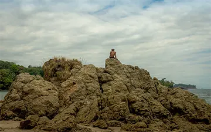
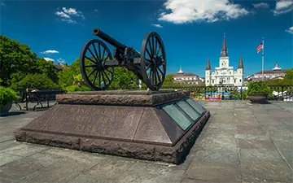
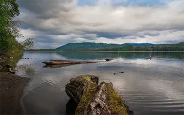
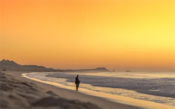
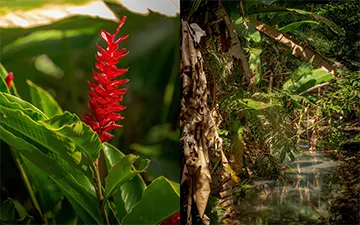
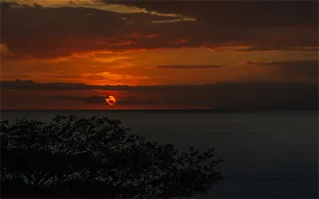

Quiet lagoon
Osorno, Chile
Laguna Bonita
Patagonia, Chile
Sunset at Punta Cometa
Oaxaca, Mexico
Cliffs of Acapulco
Guerrero, Mexico

Rocky view
Turtle Island, Costa Rica

Rocky Profile
Manuel Antonio Park, Costa Rica
Capitolio
Buenos Aires, Argentina

Washington artillery park & Saint Louis Cathedral
New Orleans, U.S.A.
Bacalar Rapids
Xul Ha, Mexico
Beach swing
Mahahual, Mexico
Sunset at the southernmost point of Mexico
Punta Cometa, Mexico
Corn Plantation
Osorno, Chile
Mallard in the pond
Toronto Center Islands, Canada
Cenote Chemuyil
Mayan Riviera, Mexico
Huichol sunset with tile walkway
Punta de Mita, México
Old Toronto & Harbourfront
Toronto, Canada

The faith of the diver
Acapulco, Mexico

Land's End
Baja California Sur, Mexico
Summer, sports & lifestyle
Toronto, Canada
Capuchin monkeys family
Manuel Antonio National Park, Costa Rica
Water lily
Chapultepec Botanical Garden
Exuberant Vegetation
Xochimilco Lake, Mexico
Manhattan Island Skyline
New York, U.S.A.

Tropical vegetation
Miami, U.S.A.
Sunset with trails of lights
La Habana, Cuba
Gilt dawn in the lagoon
Bacalar, Mexico
Beresford Building reflected on the pond
New York, U.S.A.
Chinese Garden
Montreal, Canada
Trails of lights in the Diana the Huntress fountain
CDMX, Mexico
Sketched silhouettes at sunset
Monument to the Revolution, Mexico
Penguin diving
Inbursa Acquarium, Mexico
Silk waves
Isla Negra, Chile
Stromatolites in the pristine lagoon
Bacalar, Mexico
Aquatic means of transport
Rosario Islands, Colombia

Patagonian Lagoon
Osorno, Chile
Private Lagoon
Puerto Octay, Chile
Sunny day on the pristine lagoon
Miami, U.S.A.
A summer day in the Atlantic
Miami, U.S.A.

Atlanteans of Tula
Edo. Guerrero, Mexico
Lonesome quay
Mahahual, Mexico

Yellow sunrise
San José del Cabo, Mexico
The catch of the day
Mazunte, Mexico
Egg balancing test in the Middle of the world city
Pichincha, Ecuador
Sunset with palapa
Bacalar Lagoon, Mexico

Alpinia Purpurata / Jungle
Manuel Antonio, Costa Rica
Hibiscus / Iguana
Manuel Antonio, Costa Rica
Church of Sra. De los Remedios on Tlachihualtepetl Pyramid
San Andrés de Cholula, Mexico

Primada Cathedral and Simon Bolivar Square
Bogota, Colombia
Walled City from the sea
Cartagena de Indias, Colombia
Inside the Walled city
Cartagena de Indias, Colombia
Reflections of a Mayan sunset
Mahahual, Mexico
Red sun at Punta Cometa
Oaxaca, Mexico

Sunset in the Gulf of Nicoya
Jacó, Costa Rica
City lights at night
Miami, U.S.A.
Channels and bridges
Orizaba, Mexico
Montealban pyramid
Oaxaca, Mexico
Waterfall and silk river
Llanquihue lake, Chile
Sale in canoes
Xochimilco Lake, Mexico
American Radiator Building with full moon
New York, U.S.A.
Puerto Madero at night
Buenos Aires, Argentina
{kind=link}


{kind=link}
{kind=link}
{kind=link}
{kind=link}
{kind=link}
{kind=link}
{kind=link}
{kind=link}
{kind=link}
{kind=link}
{kind=link}
{kind=link}
{kind=link}
{kind=link}
{kind=link}
{kind=link}
{kind=link}
{kind=link}
{kind=link}
{kind=link}
{kind=link}
{kind=link}
{kind=link}
{kind=link}
{kind=link}
{kind=link}
{kind=link}
{kind=link}
{kind=link}
{kind=link}
{kind=link}
{kind=link}
{kind=link}
{kind=link}
{kind=link}
{kind=link}
{kind=link}
{kind=link}
{kind=link}
{kind=link}
{kind=link}
{kind=link}
{kind=link}
{kind=link}
{kind=link}
{kind=link}
{kind=link}
{kind=link}
{kind=link}
{kind=link}
{kind=link}
{kind=link}
{kind=link}